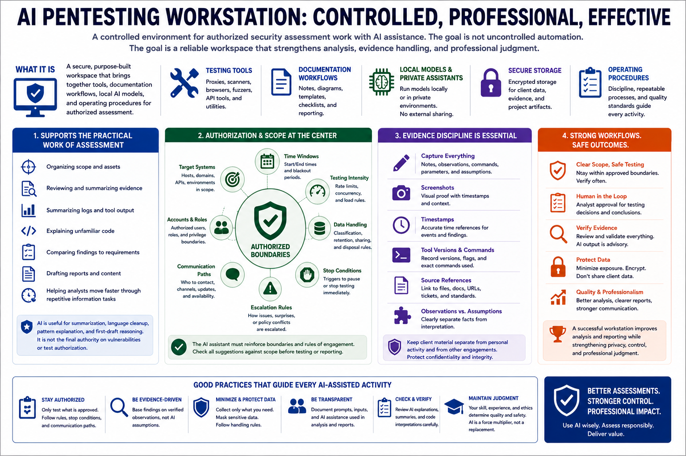

What Is an AI Pentesting Workstation?
Connecting to LMS... Progress: in progress

Narration
An AI pentesting workstation is a controlled environment for authorized security assessment work with AI assistance. It brings together testing tools, documentation workflows, local models, private assistant interfaces, secure storage, and disciplined operating procedures. The purpose is not to make testing uncontrolled or autonomous. The purpose is to give a qualified assessor a reliable workspace where evidence, client data, notes, and analysis can be handled professionally.
The workstation should support the practical work of assessment: organizing scope, reviewing evidence, summarizing logs, drafting reports, explaining unfamiliar code, comparing findings to requirements, and helping the analyst move faster through repetitive information tasks. AI can be useful for summarization, language cleanup, pattern explanation, and first-draft reasoning. It should not be treated as the final authority on whether a vulnerability exists or whether a test is allowed.
Authorization and scope sit at the center of the workstation concept. Penetration testing is only legitimate inside approved boundaries. Those boundaries include target systems, time windows, testing intensity, data handling rules, communication paths, and stop conditions. An AI assistant must be configured and used in a way that reinforces those boundaries instead of obscuring them.
Evidence discipline also matters. A good workstation makes it easy to capture notes, screenshots, timestamps, tool versions, commands, observations, assumptions, and source references. It also keeps client material separate from personal activity and from other engagements. The workstation is successful when it improves analysis and reporting while strengthening privacy, control, and professional judgment.